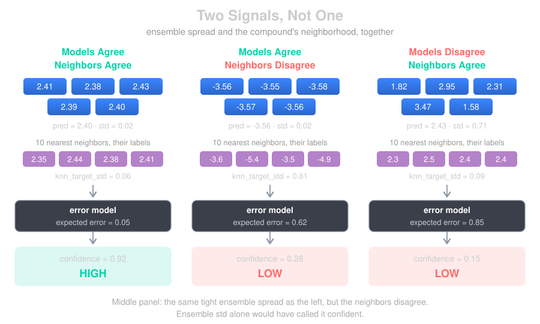
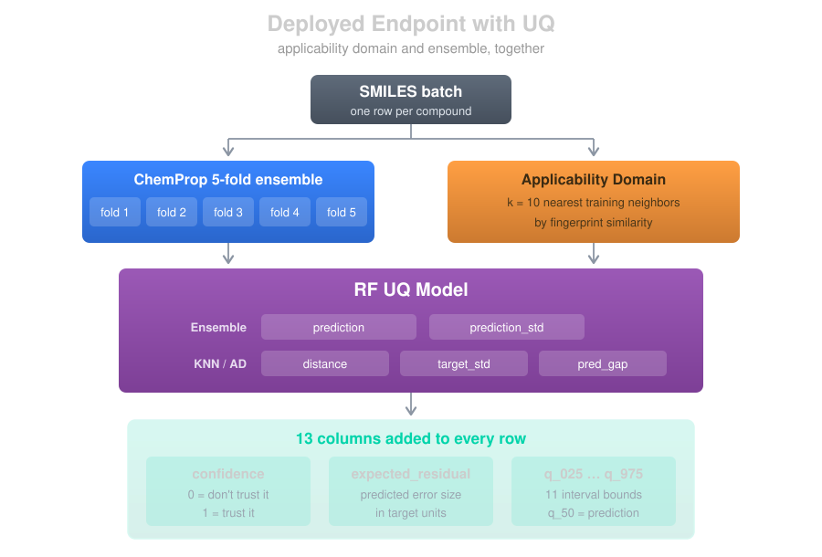
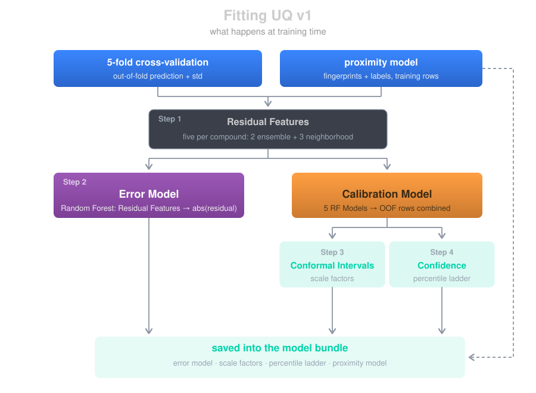
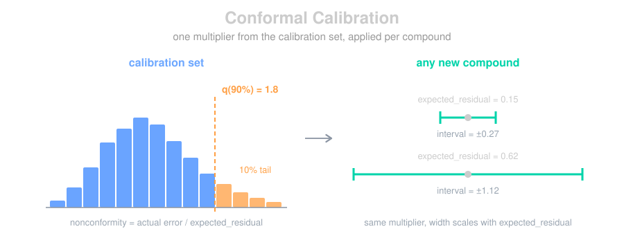

Uncertainty Quantification (UQ)
See It in Action
The Confusion Explorer uses these confidence scores to let you filter predictions by certainty and drill down on errors interactively.
A prediction without a confidence score is just a number. In drug discovery, knowing how much to trust a prediction is often more valuable than the prediction itself. It determines whether you synthesize a compound, run an experiment, or move on. In this blog we'll walk through how Workbench approaches model confidence: the ensemble signal underneath it, the v1 pipeline that turns that signal into calibrated intervals, and what the numbers do and don't mean.

The Raw Signal: Ensemble Disagreement
Every Workbench model, whether XGBoost, PyTorch, or ChemProp, is actually a 5-model ensemble trained via cross-validation. Each fold produces a model that saw a slightly different slice of the training data. At inference time, all 5 models make a prediction and we take the average.
The idea behind using ensemble disagreement as an uncertainty signal is well-established in the ML literature (see Lakshminarayanan et al., 2017): when the models disagree, the prediction is less reliable. If all 5 models predict log CLint = 2.4 ± 0.02, we have reason to be confident. If they predict 2.4 ± 0.71, something about that compound is tricky and we should be cautious.
This ensemble standard deviation (prediction_std) is the raw uncertainty signal every UQ version builds on. It comes directly from the model itself, not from an external surrogate or statistical assumption.
The Problem: Raw Std Isn't Calibrated
Ensemble std ranks predictions well: given two compounds, the one with the tighter spread is usually the safer bet. What it can't do is tell you how wrong either might be. A std of 0.3 doesn't mean the true value is within ± 0.3, or ± 0.6. The number has no units you can act on.
That's the classic discrimination vs. calibration gap (Gneiting et al., 2007). Ranking is discrimination, and std gives it to you for free. Calibration is the harder half: an 80% interval that actually contains the true value 80% of the time.
That's one half of the gap. The other is that ensemble std can be confidently wrong.
What the Neighborhood Adds
Std-based confidence has a known blind spot: when the ensemble unanimously agrees on a prediction that's nonetheless wrong. This happens most often near censoring boundaries or in dense regions of target space. Solubility is the textbook example: kinetic-sol assays cap at ~-3.5 LogS, producing a large training cluster at -3.5 to -3.7. When the model meets a chemically similar compound whose true LogS is much lower (say -5.5), all 5 ensemble members tend to converge on the attractor and predict -3.6 anyway. The agreement is genuine but uninformative. The prediction is confidently wrong, and raw std has no way to surface it.
The fix is to stop trusting ensemble agreement in isolation and instead ask: do this compound's near-neighbors in training actually agree on the label? A tight ensemble std in a neighborhood with heterogeneous labels is a red flag that std alone misses.

The left and right panels are the cases ensemble std already handles: agreement means low error, disagreement means high. The middle is the one it can't see: the ensemble is just as tight as on the left, but the neighbors' labels are spread across 2 log units. v1 reads both, so the tight std stops being the whole story.
The Endpoint, End to End
Here's the whole path for a ChemProp model, from a batch of SMILES to the columns that land on every row.

The ensemble runs first and produces two numbers per compound: prediction (the mean across folds) and prediction_std (the spread). Those two, plus the compound's SMILES, are everything the UQ model receives.
What comes back is 13 columns:
| Column | What it is |
|---|---|
confidence |
Scalar in [0, 1]. Higher means the expected error is small relative to the calibration set. |
expected_residual |
The error model's estimate of this prediction's absolute error, in target units. |
q_50 |
The prediction itself, the interval center. |
q_25, q_75 |
50% interval |
q_16, q_84 |
68% interval |
q_10, q_90 |
80% interval |
q_05, q_95 |
90% interval |
q_025, q_975 |
95% interval |
For a multi-target model every target gets its own prefixed set ({target}_confidence, {target}_q_95, and so on), with the primary target also aliased to the unprefixed names alongside prediction and prediction_std.
v1: Conformalized Residual-Estimator
v1 replaces "rank the ensemble std" with "learn how the ensemble's signals map to actual error, using the compound's neighborhood in chemical space." It's a small supervised model that predicts the magnitude of a prediction's error, conformalized to produce calibrated intervals. The approach is validated by the 2025 J. Chem. Inf. Model. study on UQ under data shift (PMC12848971), which found that error models built on [prediction, ensemble variance, distance to training] outperform standard UQ metrics across ADMET endpoints.
Almost all of the machinery is in the fitting, so that's what's worth walking through. Inference is the trivial half: five features, one forest, one multiply.

The two tracks are the part to notice. The error model is the forest that ships. The calibration model is the same fit done out-of-fold, five forests that each score only the rows they didn't train on, and it exists purely to produce honest numbers for Steps 3 and 4 before being thrown away.
Step 1: Neighborhood Residual Features
For each compound, v1 computes five scalar features that describe its local context in the training set (via a fingerprint Proximity backend). The first two are the ensemble signals; the last three come from the k nearest training neighbors (default k=10):
| Feature | What it captures |
|---|---|
prediction |
The ensemble mean, which lets the error model learn region-dependent error |
prediction_std |
Ensemble disagreement (the raw signal) |
knn_distance |
Mean distance to the k nearest training neighbors. The direct applicability-domain signal; large = novel chemistry |
knn_target_std |
Std of neighbor target values. The signal for "dense neighborhood, heterogeneous labels" failures (the censored-attractor case) |
local_pred_gap |
prediction − knn_target_mean, which catches "model predicts the cluster mean but neighbors are actually diverse" |
knn_target_std and local_pred_gap are the pair that catches a confidently wrong prediction: one flags a neighborhood whose labels disagree, the other flags a prediction that has drifted from what its neighborhood supports. Either can fire while the ensemble is unanimous, which is the case raw std can't reach. Any endpoint with a bounded readout or a dense region of target space produces it.
Step 2: The Error Model
v1 fits a RandomForestRegressor (200 trees, max depth 8) on the out-of-fold predictions, mapping those five features to the absolute residual, |actual − predicted|.
Because it's fit on cross-fold validation data, every training compound's residual comes from a model that didn't see it during that fold. The model learns, for instance, that a large knn_target_std inflates expected error even when prediction_std is small, precisely the correction std-only confidence can't make. At fit time it prints a feature-importance breakdown so you can see which signals are actually driving error on your endpoint.
Step 3: Normalized Conformal Intervals
Raw expected-residual estimates still need a coverage guarantee. v1 uses normalized (locally adaptive) conformal prediction: divide each calibration residual by the error model's estimate, take the quantile of those scores, and use it as a multiplier.
where \(\hat{y}\) is the prediction, \(\hat{r}\) the expected residual, and \(s_i\) the nonconformity score for calibration row \(i\).

The multiplier is shared by every compound; the width isn't. A 90% interval is 1.8 times whatever the error model expects for that molecule, so the same \(q_\alpha\) produces a tight interval on a well-supported prediction and a wide one on a shaky one.
The expected_residual values feeding those quantiles come from the calibration model, not the shipped error model. Conformal coverage assumes the calibration scores are exchangeable with what you'll see at inference, and that holds only when the denominator came from a forest that never saw the row.
Measure coverage on held-out data. On the cross-fold rows themselves the shipped error model supplies the denominator for rows it trained on, so any figure computed there is uninformative.
Because expected_residual varies per-compound, intervals are sharp where the model is confident and wide where it isn't. Scale factors are computed once per level (50%, 68%, 80%, 90%, 95%) and stored, so inference is a single multiply.
Step 4: Residual-Aware Confidence
The scalar confidence score ranks a prediction's expected residual against the percentile ladder stored at training time:
Interpretation: confidence of 0.7 means "this prediction's expected error is lower than 70% of cal-set predictions." Unlike the naïve std-percentile, this is a probabilistically meaningful statement, and two compounds with identical std but different neighborhoods now get different confidence, which is the correct behavior.

Classification Confidence (VGMU)
The v0/v1/v2 versioning applies to regression, where prediction_std is a natural uncertainty signal. Classifiers are different: a classification ensemble produces class probabilities, not a value with a standard deviation, so classification confidence uses its own method regardless of which regression UQ version a project favors.
The Challenge
For classification, each of the 5 ensemble members outputs a softmax probability distribution over classes. We average those to get the final _proba columns. But how do we turn that into a single confidence score? Simple approaches like the maximum predicted probability (max(p)) are tempting but have known issues. Galil et al. (2023) showed max probability alone is suboptimal for detecting incorrect predictions, especially under distribution shift. It ignores both the shape of the distribution and whether the ensemble actually agrees.
VGMU: Variance-Gated Margin Uncertainty
We use VGMU (Variance-Gated Margin Uncertainty), from the Variance-Gated Ensembles paper (2025). It combines two signals, margin (how much the ensemble prefers its top class over the runner-up) and agreement (do the 5 models agree on those probabilities), via a signal-to-noise ratio:
where \(\bar{p}_1\) and \(\bar{p}_2\) are the mean probabilities for the top two classes, and \(\sigma_1\), \(\sigma_2\) are the standard deviations of those probabilities across the 5 members. This gives:
- Ensemble agrees with clear margin → high SNR → gamma ≈ 1 → confidence ≈ p_top1
- Ensemble disagrees or margin is thin → low SNR → gamma ≈ 0 → confidence ≈ 0
- Uniform probabilities (model can't distinguish classes) → margin = 0, confidence = 0
Isotonic Calibration
Raw VGMU scores need calibration just like raw std does. During training we compute VGMU scores for all validation predictions and fit an isotonic regression mapping raw_confidence → P(correct), stored as a piecewise-linear function (two arrays) applied with np.interp at inference, with no sklearn dependency in production. After calibration, a confidence of 0.85 means that among validation predictions with similar VGMU scores, about 85% were correctly classified.
==================================================
Calibrating Classification Confidence (VGMU)
==================================================
Validation samples: 2451
Overall accuracy: 0.847
Raw confidence - mean: 0.621, std: 0.284
Calibrated conf - mean: 0.847, std: 0.128
Bin 1: n= 490, accuracy=0.639, calibrated_conf=0.654
Bin 2: n= 490, accuracy=0.794, calibrated_conf=0.805
Bin 3: n= 490, accuracy=0.871, calibrated_conf=0.873
Bin 4: n= 491, accuracy=0.924, calibrated_conf=0.922
Bin 5: n= 490, accuracy=0.998, calibrated_conf=0.982
Accuracy should increase monotonically across bins, and calibrated confidence should track it closely.
Using Confidence
All regression versions are fit and saved at training time, and uq_version picks the active one, and it defaults to "v1". v1 needs a proximity model: a SMILES column builds a fingerprint neighborhood, otherwise the model's feature columns build a feature-space one. Only when neither is available does the model fall back to v0, and training logs a warning. For offline comparison, load any saved version explicitly:
from workbench.api import Model
m = Model("my-admet-regressor")
uq = m.uq_model() # the active version, v1 by default
uq_v0 = m.uq_model(version="v0") # or v0 / v2 for comparison
Unified Across Frameworks
The same UQ pipeline runs for all three model types. Each framework trains its ensemble differently, but the uncertainty signal and calibration are unified: v1 for regressors, VGMU + isotonic for classifiers.
| Framework | Ensemble | Regression Confidence | Classification Confidence |
|---|---|---|---|
| XGBoost | 5-fold CV | v1 (v0 / v2 available) | VGMU + isotonic calibration |
| PyTorch | 5-fold CV | v1 (v0 / v2 available) | VGMU + isotonic calibration |
| ChemProp | 5-fold CV | v1 (v0 / v2 available) | VGMU + isotonic calibration |
What Confidence Doesn't Tell You
Confidence reflects how much the evidence supports a prediction, but support doesn't guarantee correctness:
- High confidence ≠ correct prediction. It means the models (and neighbors) agree, not that they're right. That's a fundamental limitation of ensemble UQ (Ovadia et al., 2019).
- Novel chemistry may get falsely high confidence if it happens to fall in a region where the models extrapolate consistently. v1's
knn_distanceis the best guard here, but it isn't foolproof. - Confidence is relative to the training set. A confidence of 0.9 on a kinase solubility model doesn't transfer to a PROTAC dataset.
- Conformal coverage assumes exchangeability. The guarantee holds when test data comes from the same distribution as calibration data. On a scaffold-split holdout, chemically novel by construction, coverage at the 95% level drops to roughly 92%, so treat the interval as a good estimate rather than a promise when the chemistry is new.
- Training-exposure bias in calibration. Calibration
prediction_stdis computed by running all 5 ensemble members on the full training set, so every row was seen by 4 of the 5 models. Truly novel molecules (seen by 0 of 5) tend to produce larger stds than the calibration distribution captures. Workbench defaults to scaffold-based cross-validation splits (Bemis-Murcko) for any dataset with a SMILES column, so calibration reflects scaffold-hopping rather than same-scaffold interpolation. For stricter "novel chemistry" evaluation, setsplit_strategy="butina"(Morgan-fingerprint clustering). - Indistinguishable populations within a calibration region. When compounds share the same feature signature but a subset are wrong (censored-data attractors), the residual-aware metric assigns them all roughly the same confidence: population-correct, but unable to flag individual unlucky misses.
For truly out-of-distribution detection, pair confidence with applicability-domain analysis, which v1 folds in through its neighborhood features and which v2 below provides as a standalone diagnostic.
Summary
Regression. v1 is the default: a RandomForest error model on [prediction, std, knn_distance, knn_target_std, local_pred_gap], calibrated out-of-fold into normalized conformal intervals plus a residual-aware confidence score. It catches the dense-region/censored-attractor failure that std-only UQ misses, and it's validated by JCIM 2025 (PMC12848971).
Classification. VGMU (margin ÷ ensemble disagreement) + isotonic calibration to P(correct), following Gillis et al. (2025).
All of it shares one philosophy: leverage the ensemble's own disagreement (and, for v1, the compound's neighborhood) as the uncertainty signal, then calibrate against held-out data so the numbers mean something.
Alternatives: v0 and v2
Two other regression versions ship in every bundle and can be loaded with Model.uq_model(version=...). v0 is the automatic fallback when no neighborhood can be built. v2 is an experimental applicability-domain diagnostic rather than a calibrated confidence. Neither is the default, and most projects won't need to think about them.
v0: Isotonic Calibrator
v0 is the lightweight counterpart to v1: same residual-aware philosophy, but with no neighborhood features and no similarity index. Its only inputs are (prediction, prediction_std), which makes it fast, easy to audit, and usable on models without a SMILES column, which is exactly why it's the automatic fallback when fingerprint proximity isn't available.
Instead of a RandomForest, v0 fits a binned isotonic regression:
- Bin predictions into N=10 quantile bins along the prediction axis.
- Within each bin, fit
IsotonicRegression(std → |residual|)(falling back to a global isotonic for bins with < 20 samples). - Apply it back on the cal set and store the 0–100 percentiles of the resulting expected residuals.
- Also fit split-conformal scale factors
q_α = quantile of (|residual| / std)for each coverage level.
At inference: look up the prediction's bin, apply that bin's isotonic to get expected_residual, then confidence = 1 − percentile_rank(expected_residual) and interval = prediction ± q_α × std. This is the standard locally adaptive conformal approach from Lei et al. (2018) applied to the scalar confidence: within each prediction band, let the data tell you how std relates to error. It captures the region-dependence of error that plain std-percentile misses, but unlike v1 it can't see the neighborhood, so it won't catch dense-region/censored-attractor failures where the label heterogeneity is the real signal.
Its conformal scale factors divide by ensemble std rather than a learned estimate, so they come straight from out-of-fold ensemble output and need no second calibration loop.
v2: Applicability-Domain Proximity Score
v2 is a different animal: a pure applicability-domain (AD) score with no model fitting, no ensemble std, and no error model. For each query, it looks at the k unique nearest fingerprint neighbors in the training set and asks two questions:
- Are they close? (low mean Tanimoto distance)
- Do they agree on the target? (low std of neighbor target values)
Confidence is high only when both are true:
where each percentile ranks the query's stat against the training set's empirical distribution.
The intervals are the distinctive part. Rather than centering on the model's prediction, v2 derives q_05/q_95 directly from the neighbors' target values, centered on the neighbor median, not the model's prediction. This is intentional: when the model disagrees with its neighbors, its marker sits outside the neighbor-derived interval, and that gap is itself a "cliff" diagnostic, a visual flag that the model is extrapolating past its local support.
v2 is the most interpretable version. It answers "given training-similar compounds, how well-supported is this query?" But it is not a residual estimator: its confidence is a relative ranking, not a calibrated P(correct) or error magnitude. That, plus limited validation so far, is why it's experimental. (v2 reuses v1's fingerprint proximity artifact, uq_proximity.joblib, when both are present in a bundle.)
References
- Lakshminarayanan et al., "Simple and Scalable Predictive Uncertainty Estimation using Deep Ensembles" (2017). Foundational work on ensemble disagreement for uncertainty
- "Uncertainty Quantification in Molecular Machine Learning for Property Predictions under Data Shifts" (J. Chem. Inf. Model. 2025, PMC12848971). Validates the error-model + conformal stack (v1) on ADMET endpoints under distribution shift
- Vovk et al., "Algorithmic Learning in a Random World". Foundational text on conformal prediction
- Angelopoulos & Bates, "Conformal Prediction: A Gentle Introduction" (2021). Accessible introduction to conformal methods
- Lei et al., "Distribution-Free Predictive Inference for Regression" (2018). Locally adaptive conformal prediction; basis for v0's binned calibrator and v1's normalized conformal
- Gneiting et al., "Probabilistic Forecasts, Calibration and Sharpness" (2007). Calibration vs. discrimination framework
- Ovadia et al., "Can You Trust Your Model's Uncertainty?" (2019). Analysis of ensemble UQ under dataset shift
- Gillis et al., "Variance-Gated Ensembles: An Epistemic-Aware Framework" (2025). VGMU approach for classification confidence
- Galil et al., "What Can We Learn From The Selective Prediction And Uncertainty Estimation Performance Of 523 Imagenet Classifiers?" (2023). Failure detection beyond max probability
- OpenADMET Blind Challenge. ExpansionRx MLM CLint dataset used for examples in this blog
Questions?

The SuperCowPowers team is happy to answer any questions you may have about AWS and Workbench. Please contact us at workbench@supercowpowers.com or on chat us up on Discord